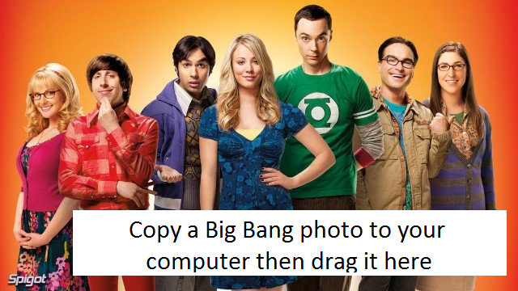

Minimal Face-Api.js
See original github at
https://github.com/justadudewhohacks/face-api.js
Save an image of a character from the Big Bang Theory and then drag the image from your computer onto the top of the pre-loaded image.
